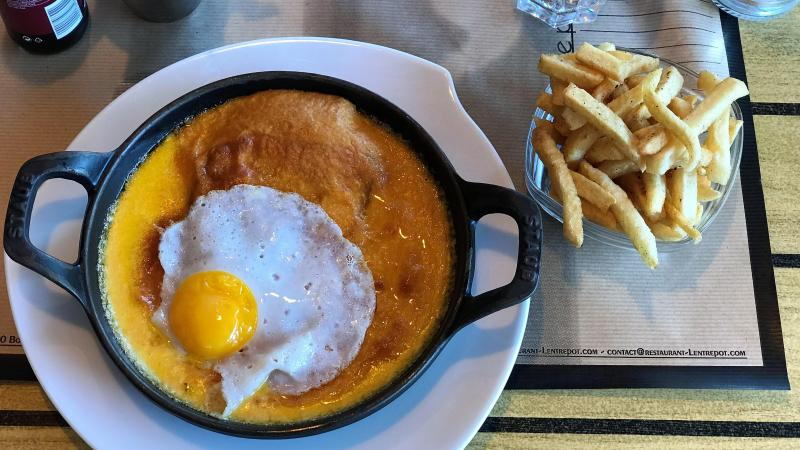

Congratulations ! You have reached level 1 ! As a reward, here is a description of the area you will visit.
Hauts de France
Presentation of the region
The Hauts de France is the north-most region. It results from the fusion between Picardie and Nord Pas de Calais. It's the third most populated region and the second with the most density. Lille is the chief town, it was already Nord pas de Calais chief town, and Amiens is the second biggest city. The region is bordered by Ile de France, Normandie, and grand est. It also has a border with Belgium and is also bordered by the northern sea and the Channel.
Specialities
- The welsh
- Carbonade flammande
- Maroille
- The Potjevleesch

Important places to visit :
- Lille: It is inconceivable to visit the Hauts-de-France without a visit to the capital of Flanders. Lille is the symbol of the temporal diversity of the region. It is a city both marked by the meanders of the Middle Ages and the Hundred Years War and the Industrial Revolution. La Grand'Place, la Vieille Bourse, l'Hospice Comtesse, le Palais des Beaux Arts or its local specialities; Lille deserves its own list of must-see attractions. Speaking of specialties…
- The Cathedral of Notre-Dame d'Amiens : Let’s start our tour with a monument of Gothic architecture. Notre-Dame d'Amiens is a must-see if you want to visit the Hauts-de-France. Built 800 years ago, it has been a UNESCO World Heritage Site since 1981. This elegant building is the work of thousands of men and trades, working hand in hand. Its structure defies gravity, an excess that it shares with the 80 other cathedrals present in the Hauts-de-France. Once able to accommodate the entire Amienois, the building now welcomes 55 million tourists per years.
- "La cote d'Opale" : The Caps Blanc-Nez and Gris-Nez, the sandy beaches, the tourist towns (Boulogne-sur-Mer, Le Portel, Samer, etc.), the Opal coast offers incredible landscapes to visit in the Hauts-de-France. Between hikes, coastal escapades, fishing on foot and nautical activities, a multitude of activities is offered to you.
- Carnival : The Hauts-de-France are renowned for their celebrations in harmony with the customs and traditions of the region. In Dunkirk, around Mardi Gras, the inhabitants gather during the day in the streets behind the band band of the drummer-major. Then, the carnivalists meet at night in large urban halls to celebrate traditional music and contemporary songs. In Bailleul, the whole celebration is the creation of the Philanthropic Society. It is based on the story of the epicurean giant Gargantua. It is this figure that rings the beginning of the party and marks its particularity: the carnival of Bailleul is famous for its giants on tank!